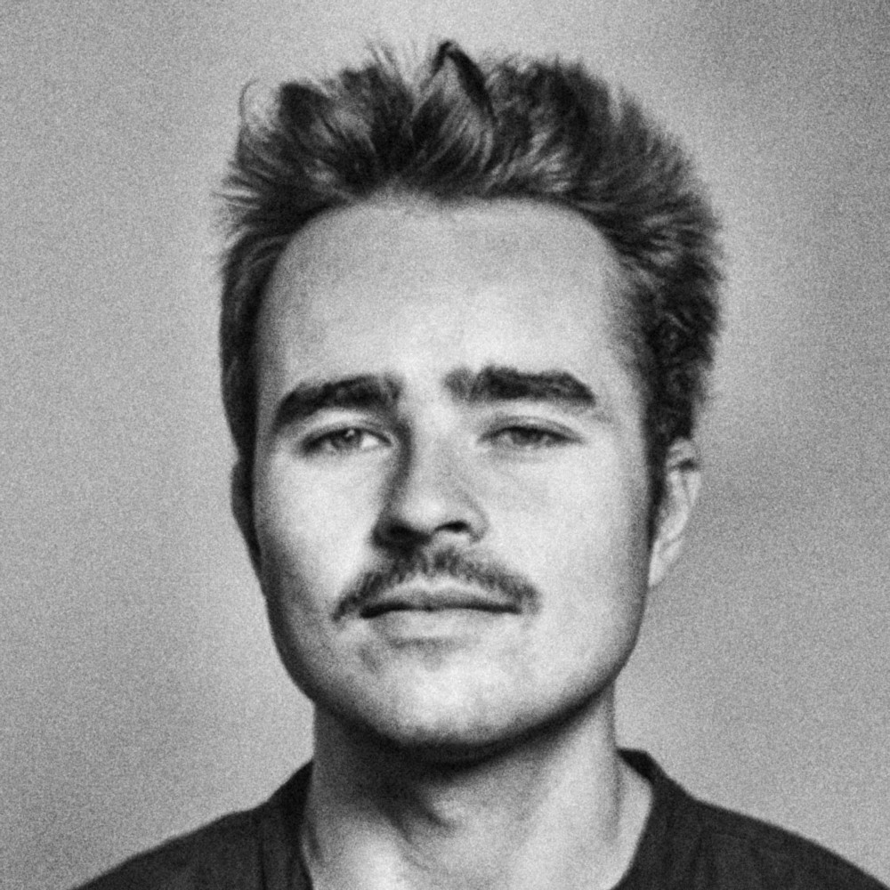

Contact
Based in Cantabria, Spain · Open to relocation

Photographer, filmmaker and communications professional, working with social causes.
I shoot on film and make documentaries, video portraits and campaigns. My personal work lives in Photography and Films; my commissioned work for NGOs, international cooperation and brands is in Work.
Audiovisual Communication (Universidad Carlos III de Madrid), documentary filmmaking (ESCAC, Barcelona) and a diploma in International Development Cooperation (OEI). Spanish, English, French and Portuguese.
I also talk about cinema on the radio: every week I present «Mamá, ¿quién es Godard?», my film section in the programme Muy Nuestro on Onda Occidental, where I discuss films and series.
- 2023 – nowAudiovisual & Communications Expert, Asociación Nueva Vida
- OngoingFilm section «Mamá, ¿quién es Godard?», Muy Nuestro, Onda Occidental (radio)
- 2022 – 23Location Manager & Producer, ITV Studios
- 2022Audiovisual Coordinator, EUROsociAL+
- 2020 – 21Audiovisual Coordinator, GIZ / INBAS, Honduras
- 2019 – nowFounder, Pescaito Studio
Press
Services
- Video production and filmingCampaigns, documentaries and films for brands, NGOs and institutions, from the idea and the script to the shoot and the edit.
- Analogue photography35 mm and medium format, black-and-white and colour film: portraits, documentary series and commissions.
- Copywriting and communicationCampaign concepts, scripts and social media for social causes and organisations.
- Fine-art printsPrints of my photographs, numbered and on request.
Based in Cantabria. I travel wherever the project takes me.